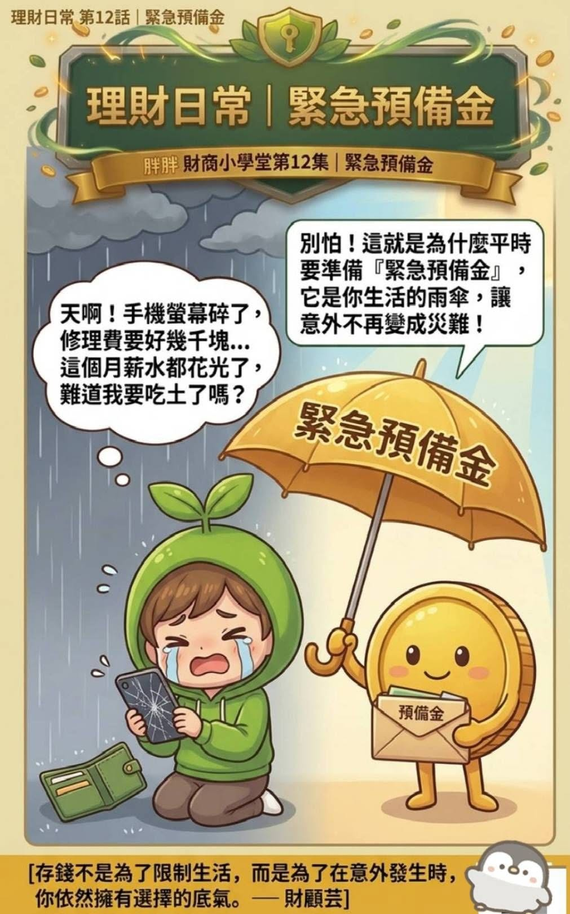

胖胖幣財商小學堂 · 第十二集
手機壞了，錢包準備好了嗎？
存錢不是限制生活，而是讓意外發生時，仍然保有選擇的底氣。

手機突然摔壞、機車臨時熄火、家中設備需要維修，這些事情不一定金額很大，卻常在最沒有準備的時候出現。
緊急預備金不是投資本金，也不是旅遊基金，而是一筆專門留給非預期支出的現金準備。它的作用不是讓意外消失，而是降低意外立刻變成卡債、借款或生活中斷的可能。
存錢不是為了限制生活，而是為了在意外發生時，依然擁有選擇的底氣。
準備多少，才算足夠？
三到六個月固定生活費可作為常見參考，但不是每個人都必須相同。收入是否穩定、家庭責任、保險保障與過去常見的突發支出，都會影響適合的目標。
如果現在很難一次準備完整金額，可以先從一筆小額開始。美國消費者金融保護局也提醒，所需金額應依個人情況決定，即使少量儲蓄，也能提供一些財務安全感。
從三個步驟開始
- 先算固定生活費：包含房租或房貸、基本飲食、交通、保費及必要帳單。
- 設定第一個小目標：先存下一次常見維修或醫療支出的金額，再逐步增加。
- 獨立存放：和日常消費帳戶分開，放在需要時容易動用、平時不會順手花掉的位置。
什麼情況可以使用？
真正無法預期、必須處理，而且不屬於日常固定開銷的支出，才適合動用。使用後不用自責，等生活恢復穩定，再慢慢補回即可。
今天的小行動
先替下一場小雨，存下第一筆錢。
不必等到能一次存足三個月。先設定一個做得到的固定金額，讓預備金開始累積。
查看 Facebook 原文參考資料：Consumer Financial Protection Bureau：緊急預備金指南。本文為一般財務教育資訊，實際金額仍應依個人收入、家庭責任與現金流調整。
把照顧、退休與想留給家人的事放在同一張圖上看。